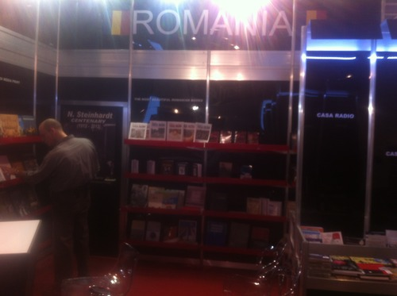

“Am vazut. Daca am vazut, am vazut!”
sau Câinii latră, târgul trece
A trecut, iată, o lună de la povestea cu Frankfurt-ul și simt nevoia să mi-o scot din cap. Sunt tentat să trag concluzii, dar nu am la ce.
Domnului Barbu și ministerului său le-au trebuit câteva zile și mai multe bâlbâieli până să-și formeze și să formuleze public opinia. Am asistat la o sarabandă de evitări și minciuni: a început prin a nega că participarea ar fi organizată de Ministerul Culturii, apoi a zis că nu știe cât a costat, ce s-a întâmplat, sunt comisii care se ocupă de asta. Au reușit însă să ajungă în final la concluzia, evidentă de altfel de la început, că totul este în regulă. Totul a fost bine, dragilor, în afară de pozele publicate de presă. Poze care sunt făcute malițios, declară domnul ministru la HotNews:
“Doamna, repet, am vazut poze, am vazut fotografii din timpul targului, manifestari. Nu i-as…, asa cum se prezinta descrierile, eu ce sa fac? Am vazut. Daca am vazut, am vazut!”.
Zice apoi la o emisiune pe Digi 24 că pozele sunt făcute înainte de începutul târgului. Ei bine, nu, se vede din data fișierelor și din declarațiile martorilor. Și culmea, sunt făcute în două zile cele mai active ale târgului.
Ministerul încearcă să o dreagă și publică un text pe site-ul propriu însoțit de fotografii care se vor concludente pentru a dejuca înscenarea. Sunt cinci poze, dintre care trei sunt de la același eveniment. Toate făcute cu telefonul. Cel mult 25 de oameni, cu tot cu fotograf și staff.
Doamna Andreescu, responsabila de organizare, dă explicații, tot la HotNews: anul acasta nu au fost bani. “Daca am fi avut bani, faceam ca in alti ani.”
În mod ciudat, acest lucru nu este rău. Toți au zis că 2013 a fost cel mai rău dintre ani, nu că în ceilalți ani a fost bine. Dacă ar fi avut bani prăpădul ar fi fost proporțional mai mare.
Anul trecut de exemplu, standul, cam la fel de gol, era negru și făcut din niște plăci plexiglas strălucitor zgâriat. Numele “Romania” era scris pe un perete cu un font și pe celălalt perete cu altfel de font, lipit strâmb, dovadă a patriotismului dus peste hotare. Pe coloanele tot negre erau lipite nume de edituri, fără ca autorii lipelilor să fi nimerit aceeași înălțime la toate. Ruleta e pentru cazino doar, nu pentru construcții. Mi-a fost și atunci rușine, dar n-am zis nimic.
Anul acesta însă n-au mai avut bani. Sărăcie lucie, dom'le. Standul a costat numai el 34 de mii de euro. Restul cheltuielilor cam încă pe atât. Dacă nu i-ar fi păcălit cei de la Sala Palatului cu mobilierul, totul era minunat, ca înainte. Dar nici acum n-a fost rău, oricum.
Citez: “Am avut niste evenimente foarte frumoase, cu public, s-a vorbit in germana si romana, deci am avut public. […] Deci am avut public, nu a debordat pe dinafara [SIC], dar niciodata nu a debordat pe dinafara [SIC], insa cei interesati au venit si au stat.”
Chiar și așa, pentru aceste patru șuete artistice simpatice s-au cheltuit 200 de salarii de român mediu. Cineva din țara asta muncește 16 ani ca să plătească o astfel de aventură. Alții plătesc o viață un credit la un apartament cu aceeași valoare pe care dragii noștri funcționari o nimicesc în cinci zile.
Rămân cu câteva întrebări, evident retorice:
* Ca participant normal la târgul de carte am plătit participare cu o lună înainte. De ce statul trebuie să plătească cu un an avans, pierzând flexibiliate și dobândă? * Dacă au început cu târgul încă de acum un an, cum de au fost în septembrie luați total pe nepregătite? * Care au fost încercările de renegociere cu organizatorii germani de la Frankfurt? * Care au fost eforturile de a repara situația în general? * Cum să nu știi (ca organizator al participării) să răspunzi pe loc cât a costat această participare? * În afară de cele 275 de cuvinte din articolul ca însoțește cele cinci fotografii pe site-ul ministerului, de ce nu există niciun alt raport de activități după târg? * Unde sunt totuși acele fotografii cu evenimentele minunate de care zic doamna Andreescu și domnul Barbu? Este puțin probabil ca la așa evenimente importante să nu fi fost cel puțin un fotograf sau presă.
Închei deci subiecul fără ca el să fie încheiat. Merităm și să fim supărați și să ni se întâmple ceea ce ni se întâmplă. Pentru că, în afară de câțiva besmetici care am făcut un pic de gălăgie, niciun martor nu a mai zis nimic. Deși în privat declarându-se foarte dezamăgite, editurile au tăcut, asociațiile lor au tăcut, ceilalți toți au tăcut. Doar presa a acordat o atenție nesperată, în ciuda acestui fapt. Este lăudabil că au tratat un așa subiect cu atât de multă atenție.
Dar gata, nu mai fac nimic, nu mai zic nimic. Subiectul este închis, până la anul. Când promit că voi documenta evenimentul inclusiv în direct de acolo. În fiecare zi.

Foto: standul României la Târgul de Carte Frankfurt 2012, colecția personală. Telefonul avea lentila de la camera foto zgâriată așa că pozele pe care le-am făcut au fost atât de proaste încât le-am ștes în afară de aceasta